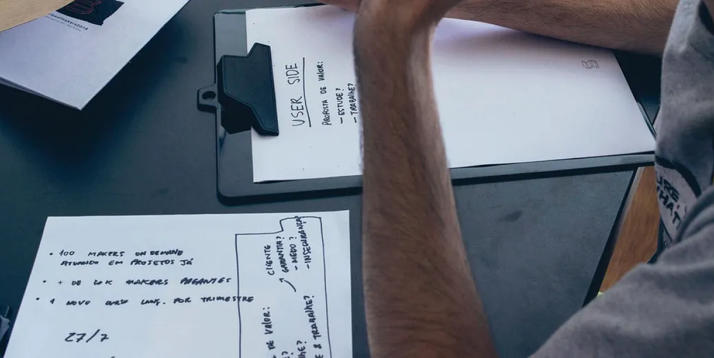

Estados
Definição dos comportamentos de foco, preenchimento e erro.
Case study · Front-End · WordPress
Como adaptar o comportamento de labels e inputs do Material Design para um formulário real em Contact Form 7.
O desafio era criar uma experiência de preenchimento mais clara dentro de uma estrutura existente, sem perder compatibilidade com WordPress e Contact Form 7.
A interface precisava mostrar quando o campo estava vazio, focado ou preenchido, mantendo a leitura simples para diferentes tamanhos de tela.
Definição dos comportamentos de foco, preenchimento e erro.
Labels que se adaptam sem desaparecer nem competir com o conteúdo.
Integração com a estrutura existente do formulário.
Comportamento consistente em telas menores e maiores.

O projeto reforçou que uma decisão pequena de front-end pode reduzir dúvidas, orientar o usuário e melhorar a percepção de qualidade de toda a experiência.